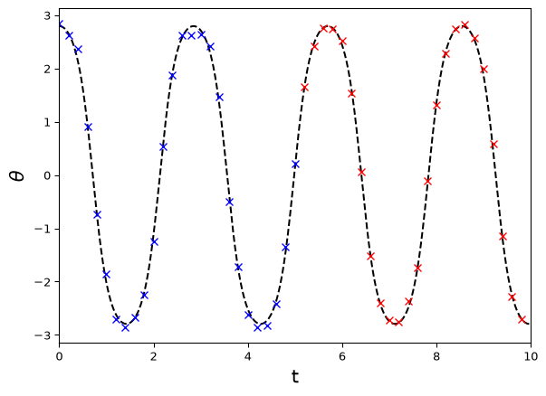
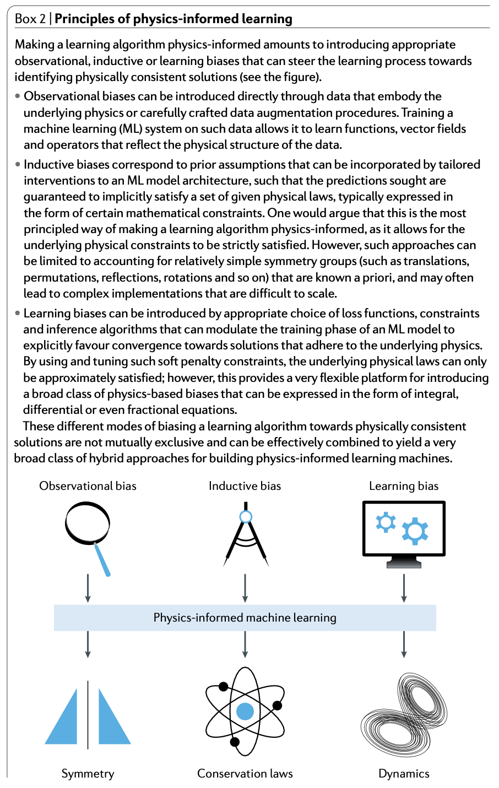
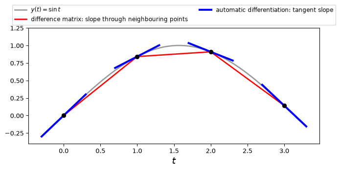
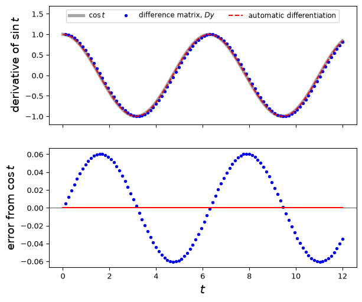
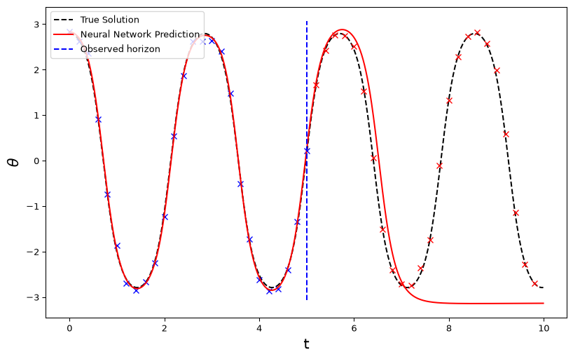
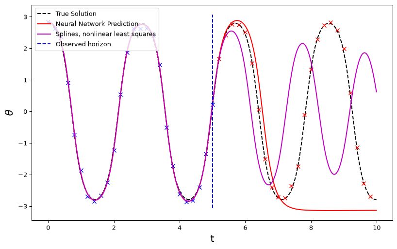
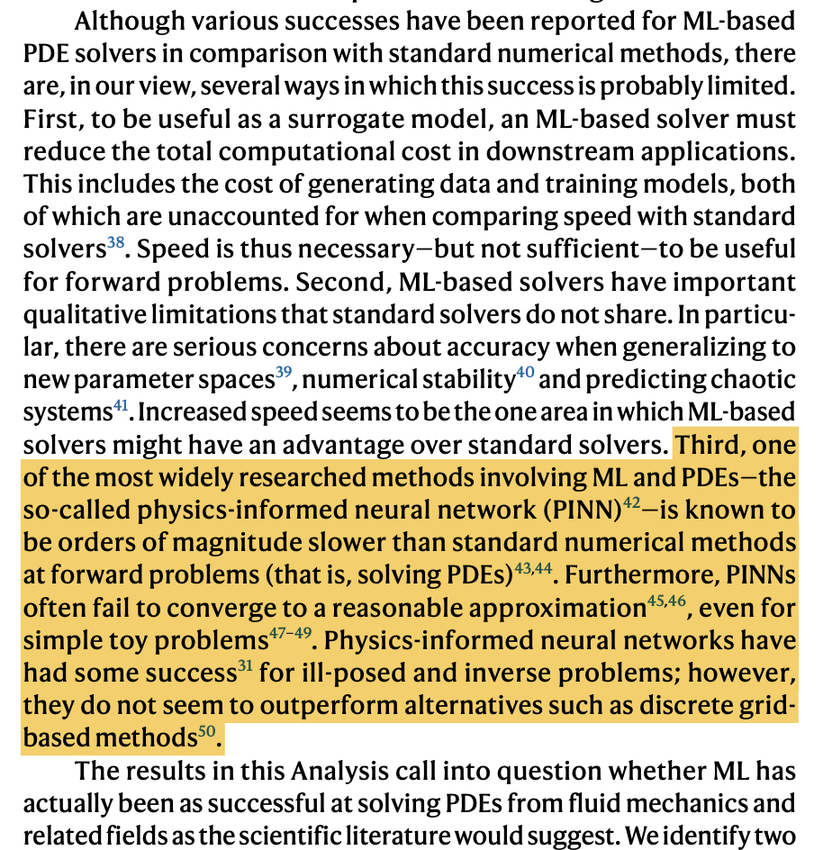
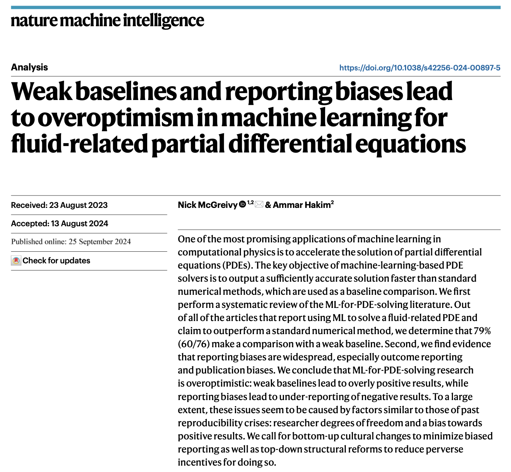

Hybrid neural models
For our last (brief) section we look at combining a neural network data model with a scientific penalty term to produce a hybrid neural model. Others call this (depending on the scientific knowledge included) physics-informed neural networks (PINNs). This is also what Karniadakis et al. (2021) call learning bias:

Whatever we call it, we’ve now learned enough to do it ourselves!
From hybrid linear to hybrid neural models
In the hybrid linear models section we represented a time series on a fine time grid with a spline data model, \(y=Bw\), linked it to the observations with an observation matrix \(A_{\text{obs}}\), and fitted it by minimising a data loss plus \(\lambda\) times a penalty on a differential equation. We represented the derivatives in the differential equation with finite-difference matrices, such as \(D\) in \(DBw\). A hybrid neural model keeps this structure and changes two things:
| Hybrid linear model | Hybrid neural model | |
|---|---|---|
| Data model | splines, \(Bw\) | a neural network, \(f_{\text{NN}}(t;w)\) |
| Time derivatives | finite-difference matrices, e.g. \(DBw\) | automatic differentiation with respect to \(t\) |
| Grids and loss | fine and observation grids; data loss \(+\ \lambda\times\) physics loss | the same |
| Fitting | one least-squares solve (stacking) | gradient descent |
Note that we could make either change without the other, e.g. we could apply difference matrices to a network’s predictions on the fine grid. Both data models are functions of \(t\) with weights fitted to data. The spline is a weighted sum of fixed basis functions, so its predictions are linear in \(w\), and we fitted it with one least-squares solve. A network’s predictions are nonlinear in its weights, so we minimise the loss by gradient descent instead, as in the neural networks section.
Pendulum revisited
Recall that the angular motion \(\theta(t)\) of a pendulum with length \(l\) subject to Newton’s laws and no friction or air resistance, is given by \[ \frac{d^2\theta}{dt^2} + \frac{g}{l}\sin \theta = 0 \] with initial conditions \[ \theta(0) = \theta_0,\ \ \frac{d\theta}{dt}(0) = v_0 \] A schematic is shown below.
The small angle approximation uses \(\sin \theta \approx \theta\), giving the linear pendulum model: \[ \frac{d^2\theta}{dt^2} + \frac{g}{l}\theta = 0 \] with the same initial conditions.
Predicting the pendulum
Now, let’s consider a variation on our original pendulum prediction problem. Suppose we have \(M\) (possibly noisy) observations of the form \[(t_i,\theta_i),\ i=1,\dots,M\] from a nonlinear pendulum and wish to predict \(\theta_j\) for a collection of new, future \(t_j\) values \[(t_j,\theta_j),\ j=M+1,\dots,M+K\]
For example, below we show the observed data in blue, the future (not yet seen) data in red, and the true, unobserved angle trajectory in black. Here the pendulum is released from rest at \(160^\circ\) and observed every 0.2 s up to \(t=5\), with noise of standard deviation 0.1.
Two time grids, two losses
As in our discussion of hybrid linear models, we again have two time grids: a fine time grid associated with the underlying physical process (as governed by the ODE/Newton’s Laws), and a coarse time grid associated with our observations of the physical process. (Reality may of course involve continuous time physics but here we use a very fine grid as a proxy for this.) In the hybrid linear model, the fine grid also set the spacing of the difference matrices, and so the accuracy of the derivatives. With a neural network, automatic differentiation gives the time derivatives exactly at any \(t\), as we’ll see, so the fine grid is just the set of times at which we check the ODE.
These two time grids naturally lead to two types of loss functions: a data loss associated with the observations, and a physics loss associated with the underlying physical process. First, we will consider the data loss.
If we denote the ‘underlying’ angular motion defined on the fine time grid, \(t_{\text{fine}}\), by \(\theta_{\text{fine}}\), and our observations of the angular motion on the coarse time grid, \(t_{\text{obs}}\), by \(\theta_{\text{obs}}\), we can (conceptually at least) use an observation matrix \(A_{\text{obs}}\) to relate the variables on the two grids: \[ t_{\text{obs}} = A_{\text{obs}}t_{\text{fine}},\ \ \theta_{\text{obs}} = A_{\text{obs}}\theta_{\text{fine}}. \] Rather than directly enforce the physics right now, we will first assume that the fine-scale dynamics can be approximated by a neural network model: \[ \theta_{\text{fine}}= f_{\text{NN}}(t_{\text{fine}};w), \] where \(w\) are the parameters (weights and biases) of the neural network, and \(f_{\text{NN}}(t_{\text{fine}};w)\) represents the vector of predictions at the fine time grid \(t_{\text{fine}}\). We explicitly represent the fine-scale dynamics here because we ultimately want to predict the angular motion at times we have not observed.
These elements lead to a data loss term that, for fixed data, depends on the neural network parameters and takes a form such as: \[ \begin{aligned} \text{loss}_{\text{data}}(w) &= \frac{1}{M}\|\theta_{\text{obs}}-A_{\text{obs}}f_{\text{NN}}(t_{\text{fine}};w)\|^2 \\ &= \frac{1}{M}\|\theta_{\text{obs}}-f_{\text{NN}}(t_{\text{obs}};w)\|^2 \end{aligned} \] where \(M\) is the number of observations, which we may or may not divide by (dividing by \(M\) doesn’t change which \(w\) minimises the data loss on its own, but it does change the balance with the physics loss below, and so what a given \(\lambda\) means).
Physics loss and time derivatives
We will consider the neural network model in more detail shortly. First we consider, at a high level, how to construct the physics loss, and in particular how to evaluate the derivatives in the ODE on the fine time grid.
In the hybrid linear model, a finite-difference matrix \(D\) mapped the spline’s values on the fine grid to approximate derivatives, \(DBw\). Here we use PyTorch’s automatic differentiation (its autograd engine) instead, which gives the exact derivative of the network’s prediction with respect to time.
We have used automatic differentiation before, in the computation graphs part of Week 2 and to train models since, but always to get the derivative of a loss with respect to a model’s parameters, which loss.backward() computed by working back through the recorded calculation and then added to each parameter’s .grad. The physics loss instead needs the derivative of the model’s prediction with respect to its input, time. PyTorch computes this from the same recorded calculation and with the same chain rule, since as far as PyTorch is concerned the weights, biases and times are all just tensors with requires_grad=True. The only differences are in which derivative we ask for and how we then use it. To handle these we need three new ideas, which we’ll take in turn using simple functions whose derivatives we already know:
- getting a derivative with respect to time back as a tensor;
- getting the derivative at every time at once;
- differentiating that derivative again.
Derivatives with respect to time
Let’s start with a derivative at a single time. Like backward() in Week 2, torch.autograd.grad differentiates a single number, so consider \(y=\sin t\) at \(t=1\), where the derivative should be \(\cos 1=0.5403\). As for the parameter \(x\) in Week 2, we set requires_grad=True on t so that PyTorch records the operations that use it. (We didn’t need to do this for the network in Week 5, because by default PyTorch sets requires_grad=True on a network’s weights and biases when it creates them.)
t = torch.tensor(1.0, requires_grad=True)
y = torch.sin(t)
print(torch.autograd.grad(y, t))
print(t.grad)(tensor(0.5403),)
Nonetorch.autograd.grad computes the derivative from the recorded calculation in the same way as backward(), but returns it rather than adding it to .grad, which is why t.grad is still None. The first argument of grad (outputs) is what we differentiate, and the second (inputs) is what we differentiate with respect to. Since we could list several tensors as inputs, the result is a tuple with one derivative for each, and so here, with just one input, we take the tuple’s first element, [0].
We use grad for the time derivatives because we need them as part of the next calculation, the ODE residual. If we used backward() on a network’s prediction instead, it would also add derivatives to the .grad of every weight and bias, and the optimiser would then use these in its update. We still use loss.backward() for the derivative of the total loss with respect to the weights and biases, though, since the optimiser reads it from their .grad.
Derivatives at many times
Now let’s move from one time to a grid of times. On the fine grid, a function \(y(t)\) becomes a vector of values \(y_i=y(t_i)\), and its time derivative becomes another vector. In the hybrid linear model, the difference matrix \(D\) mapped the vector of values to the slopes of the lines through neighbouring points, while automatic differentiation treats each \(t_i\) as a separate number and gives the slope of the tangent at each point, \(y'(t_i)\). The figure below shows both for \(y=\sin t\) on a coarse grid, with times 1 apart.

The physics loss needs the derivative at every fine-grid time, but grad only differentiates a single number. One trick for getting the derivatives at all the grid points at once is to differentiate the sum of the entries. To see why this works, take a function \(y(t)\) at three times \(t_1,t_2,t_3\), with \(y_i=y(t_i)\) and sum \(S=y_1+y_2+y_3\). For \(y(t)=t^2\) we get:
t = torch.tensor([1.0, 2.0, 3.0], requires_grad=True)
y = t**2
print(torch.autograd.grad(y.sum(), t)[0])tensor([2., 4., 6.])Here t is a single tensor holding three numbers, but PyTorch treats each entry as a separate variable, so entry \(i\) of the result is \(\partial S/\partial t_i\). Since t**2 squares each entry separately, only \(y_i\) depends on \(t_i\), and so \(\partial S/\partial t_i=y'(t_i)=2t_i\), i.e. 2, 4 and 6 here. The same is true for our network, since each time is a separate row of its input and each layer acts on each row separately, giving \(\theta_i=f_{\text{NN}}(t_i;w)\).
In the hybrid linear models section we applied a difference matrix to \(y=\sin t\) at 100 times between 0 and 12. The same trick gives the derivative at all 100 times:
t = torch.linspace(0, 12, 100, requires_grad=True)
y = torch.sin(t)
dy_dt = torch.autograd.grad(y.sum(), t)[0]The top plot compares the two ways of getting the derivative of \(\sin t\) with the exact derivative, \(\cos t\), and the bottom plot shows their errors. The difference matrix gives approximations at all but the first time, with errors up to about 0.06 here (the times are 0.12 apart). Automatic differentiation gives \(\cos t\) at all 100 times, up to rounding.

What if an output depends on more than one input? A cumulative sum is a simple example, since output \(i\) adds up inputs \(1,\dots,i\):
x = torch.linspace(0, 1, 5, requires_grad=True)
y = torch.cumsum(x, 0) # each output adds up the inputs so far
print(torch.autograd.grad(y.sum(), x)[0])tensor([5., 4., 3., 2., 1.])Each \(dy_i/dx_i\) is 1, but the result is not all ones. It is still the derivative of the sum \(S\), but now entry \(i\) is \(\sum_j \partial y_j/\partial x_i\), which adds up the effect of \(x_i\) on every output that includes it. This reduces to \(dy_i/dx_i\) only when each output depends on its own input alone. Our network has no dependence between times, so for the network the sum does give the derivative at every time.
The sum is in fact a special case of the grad_outputs argument of grad, which lets us give a weight \(v_i\) to each output \(y_i\). PyTorch then differentiates the weighted sum \(\sum_i v_iy_i\), and our sum \(S\) corresponds to setting every weight to 1, which is how other code often writes the call. backward() can give the same derivatives too, adding them to t.grad and taking the same weights through its argument gradient:
t = torch.tensor([1.0, 2.0, 3.0], requires_grad=True)
print(torch.autograd.grad(t**2, t, grad_outputs=torch.ones(3))[0])
(t**2).sum().backward() # the same derivatives, added to t.grad
print(t.grad)tensor([2., 4., 6.])
tensor([2., 4., 6.])Differentiating a derivative: create_graph=True
The ODE also needs the second derivative, \(d^2\theta/dt^2\). In the hybrid linear model we got this by multiplying difference matrices together, and here we instead call grad again, this time on the first derivative. However, to differentiate the first derivative, PyTorch needs a record of how it was calculated from \(t\), in the same way as it records the forward calculation, and by default it doesn’t keep one. For example, for \(y=t^3\) the derivative \(3t^2\) comes back from grad as plain numbers, with no record of how they depend on \(t\). Setting create_graph=True tells PyTorch to also record the derivative calculation, so that we can differentiate the result again:
t = torch.tensor([1.0, 2.0, 3.0], requires_grad=True)
y = t**3
dy_dt = torch.autograd.grad(y.sum(), t, create_graph=True)[0]
print(dy_dt)
d2y_dt2 = torch.autograd.grad(dy_dt.sum(), t)[0]
print(d2y_dt2)tensor([ 3., 12., 27.], grad_fn=<MulBackward0>)
tensor([ 6., 12., 18.])These are \(3t^2\) and \(6t\) at \(t=1,2,3\), and the grad_fn in the first printout is PyTorch’s record of the operation that produced dy_dt. Without create_graph=True, dy_dt prints as tensor([ 3., 12., 27.]), with no grad_fn, and the second call fails with RuntimeError: element 0 of tensors does not require grad and does not have a grad_fn. (Note that Week 2’s retain_graph=True doesn’t help here, since it only keeps the saved forward values for a second backward pass through the same calculation, and doesn’t record the derivative calculation.)
Training needs create_graph=True for a second reason. The physics loss is computed from the time derivatives, which themselves depend on the weights, so when loss.backward() differentiates the physics loss with respect to the weights it has to work back through the derivative calculation too, and that needs a record of it. We can see this with a model that has a single weight \(a\), \(\theta(t)=\sin(at)\), so that \(d\theta/dt=a\cos(at)\), and the loss \(L=(d\theta/dt)^2\), which, like the physics loss, is built from the time derivative. By the chain rule and the product rule, \[
\frac{dL}{da}=2\,\frac{d\theta}{dt}\,\frac{d}{da}\Big(\frac{d\theta}{dt}\Big)=2a\cos(at)\big(\cos(at)-at\sin(at)\big),
\] which is \(-0.6509\) at \(a=2\) and \(t=0.5\). PyTorch gives the same:
a = torch.tensor(2.0, requires_grad=True) # one weight
t = torch.tensor([0.5], requires_grad=True) # one time
theta = torch.sin(a * t)
dtheta_dt = torch.autograd.grad(theta.sum(), t, create_graph=True)[0]
loss = torch.mean(dtheta_dt**2) # mean, as in the physics loss
loss.backward()
print(a.grad)tensor(-0.6509)Without create_graph=True in the grad call, dtheta_dt has no record of how it depends on \(a\), and loss.backward() fails with the same error. We could also have used torch.autograd.grad(loss, a) here, which returns the same value.
Constructing the physics loss
Given the ability to compute time derivatives in PyTorch, we can do this for the neural network model \(f_{\text{NN}}(t_{\text{fine}};w)\), and then use these derivatives to construct the physics loss. This will have the general form:
import torch
import torch.autograd as autograd
import matplotlib.pyplot as plt
# e.g. 100 times, one per row (nn.Linear(1, 50) needs [100, 1])
t_fine = torch.linspace(0,10,100,requires_grad=True).unsqueeze(1)
theta_fine_pred = model(t_fine)
# Compute first derivative dtheta/dt
# note: grad always returns a tuple of gradients,
# even if only one, so take first element
dtheta_dt_fine = torch.autograd.grad(
outputs=theta_fine_pred.sum(),
inputs=t_fine,
create_graph=True
)[0]
# Compute second derivative d2theta/dt2
d2theta_dt2 = torch.autograd.grad(
outputs=dtheta_dt_fine.sum(),
inputs=t_fine,
create_graph=True
)[0]Here torch.linspace gives a tensor of shape [100], and .unsqueeze(1) adds a second dimension of size 1, giving shape [100, 1], with one time per row, as nn.Linear(1, 50) expects.
Both calls need create_graph=True: the first so that the second call can differentiate dtheta_dt_fine, and the second because the physics loss is computed from d2theta_dt2, so in training loss.backward() needs a record of how d2theta_dt2 depends on the weights.
Assuming the ODE holds at every fine-grid time, the physics loss for the network has the form \[ \text{loss}_{\text{physics}}(w) = \frac{1}{P}\|\frac{\partial^2 f_{\text{NN}}(t_{\text{fine}};w)}{\partial t^2} + \frac{g}{l}\sin f_{\text{NN}}(t_{\text{fine}};w)\|^2 \] where \(P\) is the number of fine-grid times.
Combining the losses
The overall loss function is then a combination of the data loss and the physics loss: \[ \text{loss}_{\text{total}}(w) = \text{loss}_{\text{data}}(w) + \lambda\times\text{loss}_{\text{physics}}(w) \] where \(\lambda\) is a hyperparameter that weights the relative importance of the data and physics terms.
As for the linear model, \(\lambda\) can be chosen by using a simple hold-out validation set, a more sophisticated method such as cross-validation, or set by the user based on external knowledge. Since we want to predict forward in time, the validation observations should be the latest ones (a chronological split, as in the hybrid linear models chapter). Here we just manually set (by trial and error…) \(\lambda\) for simplicity.
We’re almost ready to put this all together, but first let’s consider the neural network model in a bit more detail.
Simple neural network model
Here is a simple example of a neural network model in PyTorch, with two hidden layers and tanh activation functions. We use tanh here because it is smooth (infinitely differentiable) which tends to be appropriate for ODE models (requiring derivatives in time), cf. ReLU which is technically not smooth and more common in classification tasks. ReLU is linear on each side of zero and the network’s other layers are linear, so a ReLU network’s output is piecewise linear in its input, here \(t\). Its second derivative with respect to \(t\), which the physics loss needs, is therefore zero almost everywhere.
We will again use torch.nn.Sequential to define the model:
import torch.nn as nn
nn.Sequential(
nn.Linear(1, 50),
nn.Tanh(),
nn.Linear(50, 50),
nn.Tanh(),
nn.Linear(50, 1)
)This has a single input neuron (representing time), two hidden layers with 50 neurons each, and a single output neuron (representing the angular motion). The nn.Linear layers are fully connected layers, and the nn.Tanh layers are the activation functions.
The input is a single scalar ‘feature’ \(t\) and the output is a single scalar ‘response’ \(\theta(t)\). As with our other models, we can evaluate this model for a collection of input values, e.g. at \(t_{\text{obs}}\) or \(t_{\text{fine}}\), to get a collection of output values. Each evaluation is like a ‘row’ of a linear model, though now we have a nonlinear model, and PyTorch evaluates all the rows (the batch dimension) at once.
Putting it all together
We can now put all these elements together to construct a hybrid neural model for the pendulum motion. We assume that the data has been generated already as above.
In contrast to the linear example (a projectile), the physics here is nonlinear: we generate the data with the nonlinear pendulum equation and use the same equation in the physics loss, so the physics model is ‘perfect’. A linear model can’t use this equation directly, since \(\sin\theta\) makes the problem nonlinear in the weights. We could still fit a spline model with this equation by nonlinear least squares, which repeatedly linearises the problem and solves a least-squares problem like those in the hybrid linear models section at each step. The network’s loss is nonlinear in its weights anyway, so this is no harder. We could also try the linear pendulum equation in the physics loss, i.e. an imperfect physics model.
import torch
import torch.nn as nn
import torch.optim as optim
import numpy as np
import matplotlib.pyplot as plt
# NN parameters
torch.manual_seed(0)
lambda_reg = 1.5e-3 # Regularization parameter λ
num_epochs = 10000 # Number of training epochs
# Define the neural network model using nn.Sequential
model = nn.Sequential(
nn.Linear(1, 50),
nn.Tanh(),
nn.Linear(50, 50),
nn.Tanh(),
nn.Linear(50, 1)
)
# Set up the optimizer
optimizer = optim.Adam(model.parameters(), lr=0.001)# Convert t_data, t_grid and y_data to torch.float32, once
# (unsqueeze adds a dimension: one time per row)
t_data_tensor = torch.tensor(t_data,
dtype=torch.float32).unsqueeze(1)
t_grid_tensor = torch.tensor(t_grid,
dtype=torch.float32,
requires_grad=True).unsqueeze(1)
y_data_tensor = torch.tensor(y_data, dtype=torch.float32)
# Training loop
for epoch in range(num_epochs):
optimizer.zero_grad()
# Compute the model predictions at observation points
y_pred_obs = model(t_data_tensor)
# Compute the data loss
data_loss = torch.mean((
y_pred_obs.squeeze() - y_data_tensor) ** 2)
# Compute the model predictions at fine grid
y_pred_grid = model(t_grid_tensor)
# Compute first derivative dy/dt on fine grid
dy_dt = torch.autograd.grad(
outputs=y_pred_grid.sum(),
inputs=t_grid_tensor,
create_graph=True
)[0]
# Compute second derivative d2y/dt2
d2y_dt2 = torch.autograd.grad(
outputs=dy_dt.sum(),
inputs=t_grid_tensor,
create_graph=True
)[0] # Define the ODE residual
ode_residual = d2y_dt2 + g_true/l_true*torch.sin(y_pred_grid)
# Compute the physics loss
physics_loss = torch.mean(ode_residual ** 2)
# Total loss
loss = data_loss + lambda_reg * physics_loss
# Backward pass and optimization
loss.backward()
optimizer.step()The loop uses both kinds of derivative from the previous sections. The two torch.autograd.grad calls give the first and second time derivatives for the ODE residual, and loss.backward() then gives the derivative of the total loss with respect to the weights and biases, working back through those time derivatives, and adds it to each parameter’s .grad. As in Week 2, optimizer.step() uses these to update the parameters we gave the optimiser, model.parameters(), and optimizer.zero_grad() clears them at the start of the next pass. (loss.backward() also adds a derivative to the .grad of the tensor of times, since we created it with requires_grad=True, but nothing uses it because the optimiser only updates the weights and biases.)
Each pass through the loop uses all the observations and all the fine-grid times, so this is full-batch gradient descent. As with the images in Week 5, we could instead split the fine-grid times into minibatches, with one step for each minibatch.
Result:

The network fits the data well, but after about \(t=7\) the prediction stops swinging and sits at \(\theta\approx-\pi\), i.e. the pendulum balanced upside down. Why does it end up there? The ODE on its own has many solutions, including every swing of the pendulum and constants such as \(\theta=0\) (at rest) and \(\theta=-\pi\), which satisfy the ODE exactly because \(\sin\theta=0\) and the second derivative is zero. Initial conditions would pick out one of these, but the physics loss doesn’t include any. Up to \(t=5\) the data play that role and select the swinging solution, but after the last observation nothing does.
Since the physics loss is only a soft penalty and \(\lambda\) is small, breaking the ODE slightly for a short time (here between about \(t=5\) and \(t=7\)) costs very little, and lets the curve move onto a different solution. Constants are especially easy for training to reach, since they make the residual exactly zero. This is a known difficulty with PINNs: fixed points (equilibria) of a dynamical system, like this one, create local minima in the physics loss that training can get stuck in, especially when the system starts close to one (our pendulum starts at 160°, nearly upside down) or the time interval is long (Rohrhofer et al., 2023).
The same difficulty arises without a neural network. If we use the spline data model from the hybrid linear models section, \(\theta=Bw\), with the same nonlinear physics loss and the same \(\lambda\), the loss is nonlinear in \(w\), and we can fit it by nonlinear least squares, as described above. The figure compares the result with the network’s. Up to \(t=5\) both fit the data. After that the splines keep swinging, but with a smaller amplitude and a shorter period than the true motion, close to another solution of the pendulum equation (a pendulum’s smaller swings are faster). Neither model is pinned to the true motion once the data stop.

Takeaways
Notes:
Within the data, both hybrid models, the network and the splines, fit more flexibly than a pure physics model would, closely enough to follow the noise. Beyond the data the physics is enforced only weakly, so the fit can switch to another solution of the ODE. A hybrid model doesn’t by itself solve the extrapolation problem.
Here the physics is exact, and the pure physics model, the pendulum ODE with its initial angle and velocity fitted to the data, extrapolates well, while the hybrid models do less well. A hybrid model is of most use when the physics is only approximately right, particularly within the range of the available data. (Fitting the pure model is also a nonlinear least-squares problem, and from a poor starting guess it can stop at a wrong solution too.)
I found it quite difficult to tune the training parameters for the neural network model! The model was very sensitive to the learning rate, the number of epochs, and the regularisation parameter. I also gave up on SGD and used the Adam optimiser instead! (Adam is a version of gradient descent that adapts the step size for each parameter as it goes. In PyTorch it is used just like
optim.SGD.) Even then my results were not really that great.Changing \(\lambda\) doesn’t simply fix this. With \(\lambda = 0.1\) the swings after \(t=5\) shrink and die away, and with \(\lambda = 1\) the network ignores the data altogether and predicts \(\theta\approx 0\) throughout, i.e. the pendulum at rest, which also satisfies the ODE exactly. The true motion would score better on both losses, so here the loss doesn’t prefer the wrong answer, and training has instead got stuck on an easy solution.
While this may be my own limitations, it is also a common issue with neural networks: they can be difficult to tune and interpret. This is another reason why we included simpler linear models in this course – they are often much easier to interpret and tune. In addition, the same ideas can be extended to nonlinear models using a similar approach to the linear model approach, without the need for neural networks.
Having said that, with more time and effort, neural networks can be very impressive and powerful tools!
YOUR CHALLENGE: Try to improve the results above!
Further warnings\(\dots\)
Cautionary notes

From McGreivy and Hakim (2024), Weak baselines and reporting biases lead to overoptimism in machine learning for fluid-related partial differential equations, Nature Machine Intelligence 6, 1256–1269:
